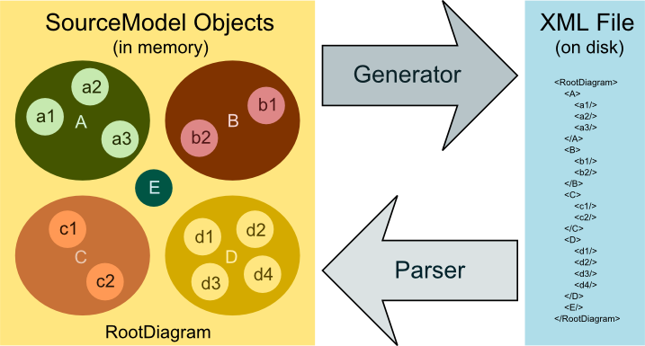

The Persistence System"
The Diagram SDK persistence system is responsible for saving and loading the end user's documents. The design of the Diagram SDK persistence system differs from many persistence frameworks, which typically provide an interface or base class that implements a Save operation and a Load operation. Instead, the Diagram SDK uses a parser/generator system to decouple the file format from the in-memory object model, which confers the following advantages:
- Decoupling the persistence format from the model
- Enabling support for a range of file formats
Persistence System Architecture
The following diagram illustrates the high-level architecture of the persistence system.
Persistence System Theory of Operation
The persistence system uses parsers and generators to convert back and forth between XML source files on disk and SourceFiles, which represent persisted source files within the Diagram Object Model (DiOM) in memory.

The persistence system provides a framework that you plug into by creating three components:
- Parser—A parser reads persisted source file and instantiates a SourceFile in memory. A parser consumes a stream of XML data from a persisted source file, instantiates a SourceFile in memory, and populates it with a hierarchy of DiOM Elements. In most cases, you should derive your parsers from XmlModelParser.
- Generator—A generator serializes the model Elements of a SourceFile into a persisted XML file on disk. In most cases, you should derive your generators from XmlModelGenerator.
- XML Schema (Optional)—To define a valid XML persistence format for a DocumentType
Generally, for each IDocumentType you define, you will need to write both a parser and a generator. Ideally, the generator you write for a DocumentType produces a stream of data that can be parsed by the parser you write for the same DocumentType. However, the parser should be robust enough to handle any input and produce a partial model and a list of errors that can be delivered to the end user.
Parsing and Generating Plugged-In Types
The Diagram SDK plug-in framework requires that your parsers and generators detect plug-in types and attempt to route operations to the appropriate plug-in parser or generator.
Primary Types that Participate in the Persistence System
The following types form the backbone of the persistence system. For more information about the persistence system API, see the documentation for the NationalInstruments.SourceModel.Modeling.Persistence Namespace.
SourceFile
A SourceFile represents a persisted source file within the DiOM. SourceFiles invoke parsers and generators for persistence.
IModelParser
The IModelParser interface defines the minimal set of API members required for model parsers to operate within the Diagram SDK persistence system.
BaseModelParser
BaseModelParser is an abstract base class from which you can derive model parsers to handle arbitrary storage file formats.
XmlModelParser
XmlModelParser derives from BaseModelParser and serves as a base class for XML model parsers. In most cases, you should derive your parsers from XmlModelParser.
When the end user loads a saved XML document in a shell application, the Diagram SDK passes the XML file to the SourceFile.Load method. The SourceFile then parses the elements of the XML file until it comes across an element it doesn’t know how to parse. The SourceFile then queries the CompositionHost.CompositionContainer.Catalog for a parser plug-in that satisfies the appropriate export contract. If the query succeeds, the SourceFile instantiates the appropriate parser and passes the XML element to the plug-in parser's Parse method.
IModelGenerator
The IModelGenerator interface defines the minimal set of API members required for model generators to operate within the Diagram SDK persistence system.
XmlModelGenerator
XmlModelGenerator implements the IModelGenerator interface and serves as a base class for XML model generators. In most cases, you should derive your generators from XmlModelGenerator.
The generation of an XML file from an in-memory SourceFile is very similar to the parsing process. However, in the case of generating, the user already has a SourceFile in memory, which they either loaded or constructed from scratch. When the user invokes the shell application's save operation, the Diagram SDK inspects the model to determine which generator to use. The SourceFile instantiates the appropriate generator, if found, and passes the RootDiagram to the generator.